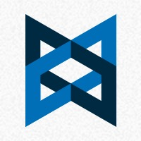
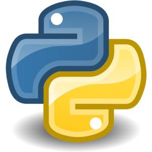

- # 基本信息
李雨航 也叫 鲤鱼
李雨航的基本信息
西安电子科技大学 计算机科学与技术专业
应聘: 前端工程师
邮件: lyh472617147@icloud.com
电话: 155-xxx-xxx check console
- # jQuery
- # Python
项目介绍
蜂鸟招聘后台管理系统
2014年 - 9月
蜂鸟招聘是我大三上学期找的兼职,是坐落西安交通大学创业中心，一个帮助求职者和HR之间快速匹配的项目:
1.学会了灵活运用 javascript 和jquery和对应的插件(Echars)
2.为了提高操作性，全程使用 ajax
3.运用了 python 写了拉钩网,哪上班的 网络爬虫
这个项目对我提升比较大
我从中锻炼了 jQuery 的使用,熟悉了前后台数据的交互,熟练了 ajax 的运用
遇见的问题 : 产品经理的需求变更频繁，让后期代码臃肿难以维护
解决办法 : 写好注释，尽量对代码进行模块化，方便更改和管理.对于大量使用数据交互的后台界面应该选择合适的框架,例如angular,backbone
- # Backbone
- # Node
- # Mongodb
项目介绍
一叶书签
2014年 - 11月
一叶书签是一个网站书签聚合,对用户收藏的链接进行数据整合,并分享,提供点赞,关注的项目.
项目地址: yiye.me
采用MEAN架构:
Mongodb express Angular Nginx(其中angular被我们替换为了backbone)
1.学会了git的使用和团队多人开发.
2.这个项目让我有了独立建站的经验,由于是创业团队,使用了MEAN架构,既写了后台node,也学会了backbone的使用
3.参与到了产品的前端开发,后台开发,产品改进讨论.喜欢上了创业的气氛
4.宝贵的团队协作经验,是我整个大学最大的财富
遇见的问题: 多不胜数,但遇见最大的问题并非技术上的问题,而是产品的问题
解决办法: 团队思考,技术交流
- # 拥有技能
get技能
-
jQuery
跨浏览器 javascript 库
-

Bootstrap
前端UI框架
-

Backbone
前端MVC框架
-

Node.js
基于javascript的服务器脚本
-
Monogodb
一种NoSQL数据库
-

Python
强大优雅的脚本语言
- # 积极的
- # 有趣的
大学生活
2012年9月 - 2014年11月
加入TCL俱乐部技术部担任副部长
加入西电开源社区
加入微客工作室参与一些小项目
联合举办了第四届西电互联网大会,并完成宣传网的 前端
暑假参加闪电孵化器夏季训练营
大三找到创业公司兼职，完成 后台前端 界面和 网络爬虫 信息收集
加入网络项目loli.com的 前端开发
加入一叶书签团队担任 nodejs 开发
- # 求知的
- # 冒险的
关于我
1993年4月
我关注web前端的发展,如react polymer。
对新鲜的事物,我有着一颗好奇求知的心,向往卓尔不凡的生活.
我的理想是成为一个全栈独立开发者,生活如首诗